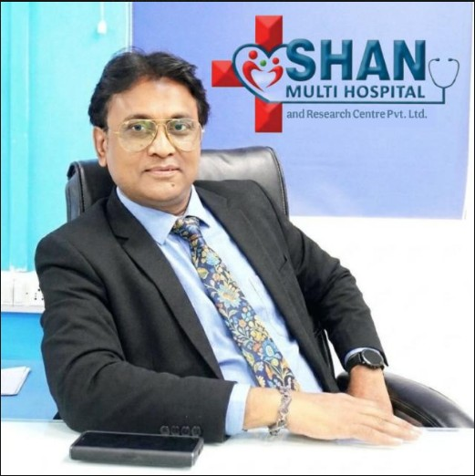

Our Leadership
The visionaries behind Shan Group Hospital's commitment to excellence.
The visionaries behind Shan Group Hospital's commitment to excellence.
Dedicated to bringing world-class healthcare to your doorstep.
Chairman & CMD, Shan Group
For many families in smaller towns and nearby villages, access to advanced healthcare has often meant traveling long distances to big cities. This reality inspired Shan Group to take a meaningful step toward bringing modern, reliable, and compassionate healthcare closer to the communities that need it most.
Our hospital has been established with a clear purpose — to provide high-quality medical services, advanced technology, and skilled healthcare professionals while ensuring that treatment remains accessible and affordable for every family.
This initiative reflects our deep sense of social responsibility and commitment to community well-being. As we serve this region with dedication and compassion, our vision is also to expand and establish more healthcare facilities in the future, reaching many more underserved communities.
We sincerely thank the community for their trust and support as we continue our journey toward building a healthier and stronger society.
कई छोटे शहरों और आसपास के गांवों के परिवारों के लिए बेहतर इलाज पाने का मतलब अक्सर बड़े शहरों तक लंबा सफर तय करना होता था। इसी हकीकत को देखते हुए Shan Group ने एक अहम कदम उठाने का फैसला किया, ताकि आधुनिक, भरोसेमंद और इंसानियत से भरी स्वास्थ्य सेवाएँ उन लोगों तक पहुंच सकें जिन्हें इसकी सबसे ज्यादा जरूरत है।
हमारा यह अस्पताल एक साफ मकसद के साथ बनाया गया है — लोगों को अच्छी क्वालिटी का इलाज, नई मेडिकल तकनीक और अनुभवी डॉक्टरों की सेवाएँ देना, और साथ ही यह सुनिश्चित करना कि हर परिवार के लिए इलाज आसानी से उपलब्ध और किफायती रहे।
यह पहल हमारे समाज के प्रति जिम्मेदारी और लोगों की भलाई के प्रति हमारी सच्ची प्रतिबद्धता को दर्शाती है। हम पूरे समर्पण और सेवा भाव के साथ इस क्षेत्र के लोगों की सेवा करना चाहते हैं। साथ ही हमारा सपना है कि आने वाले समय में और अस्पताल और हेल्थकेयर सुविधाएँ शुरू की जाएँ, ताकि ऐसे कई और इलाकों तक अच्छी स्वास्थ्य सेवाएँ पहुँच सकें जहाँ आज भी इसकी कमी है।
हम इस क्षेत्र के लोगों का दिल से धन्यवाद करते हैं, जिन्होंने हम पर भरोसा और समर्थन दिखाया है। इसी विश्वास के साथ हम आगे भी एक स्वस्थ और मजबूत समाज बनाने की दिशा में अपना सफर जारी रखेंगे।

Chief Executive Officer (CEO)
The fusion of advanced technology and human compassion is the key to excellence in healthcare. My focus is on medical innovation and operational excellence, ensuring every patient receives seamless, high-quality care with safety as our top priority.
उन्नत तकनीक और मानवीय करुणा का मेल ही बेहतर स्वास्थ्य सेवा की कुंजी है। मेरा ध्यान चिकित्सा नवाचार और परिचालन उत्कृष्टता पर है, ताकि हर मरीज को सुरक्षित और निर्बाध उच्च गुणवत्ता वाली सेवा मिले।

Executive Director
Strategic growth means expanding our reach to those who need it most. My mission is to build sustainable health infrastructures in underserved communities. Through education and proactive care, we are creating a legacy of wellness for generations.
रणनीतिक विकास का अर्थ है उन लोगों तक पहुँचना जिन्हें इसकी सबसे अधिक आवश्यकता है। मेरा मिशन वंचित समुदायों में मजबूत स्वास्थ्य ढांचा तैयार करना है। शिक्षा और सक्रिय देखभाल के माध्यम से हम आने वाली पीढ़ियों के लिए कल्याण की विरासत बना रहे हैं।